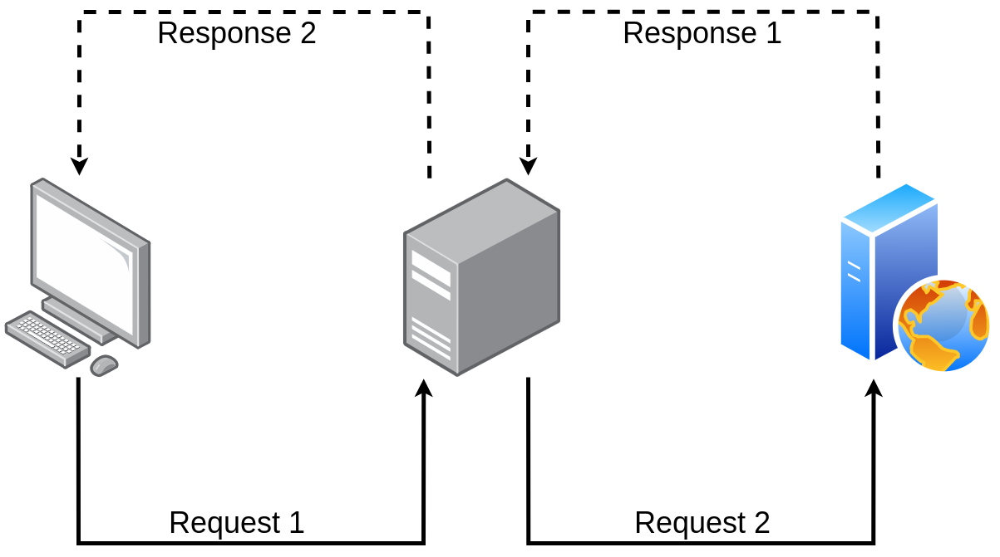

My proxy
A "Proxy" server is a "mandatory" process, which will serve as an intermediary for communication between the Web client (the browser) and the Web server. This communication is organized according to the HTTP protocol, based on TCP.
The role of the proxy is to:
- Filter communications by prohibiting access to sites based on their content (following a list of keywords).
- Serve as a "cache", ie to memorize the content of the most frequently visited pages and thus avoid having to retrieve them again from the server that hosts them.
- The goal is to reduce data traffic towards the outside (the proxy is generally in the local network).
- Modify the data transmitted (implementation of censorship for parental protection, for example).
- Ensure better security. The client machines do not communicate directly with the servers located outside the local network, but only with the proxy (one can also prohibit any direct transaction, without going through the proxy, from a client to a server outside the using a firewall)

Test page